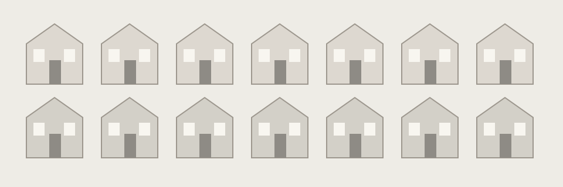

Climate control and flat terrain · Ch. 11
- Apparent benefit
- Predictable production and transport
- Hidden cost
- Lost snow, hills, and environmental variety
- Thematic significance
- Efficiency does not measure every form of value.
A HUSKYDADDY NOVEL STUDY
Study how an organized world shapes what its people can notice, feel, and choose.
KEY IDEA
A setting does more than provide scenery.
Study how the community’s spaces, rules, and routines shape what people can choose.
Physical setting includes places and environmental conditions. Social setting includes roles and customs. Psychological setting is the atmosphere people experience under those conditions. Analyse their interaction rather than describing scenery alone.
Full-novel analysis is hidden. Choose “Full novel” above when you are ready. Chapter-by-chapter notes remain available in the reading guide.

Evidence note: Novel events below are paraphrased. Chapter numbers locate the relevant events; use page numbers from your own edition in formal MLA writing. Interpretations are arguments to test, not verified statements of authorial intention.
The community has dwellings, a school, a Recreation Area, a House of the Old, a Nurturing Center, and work spaces. Bicycles and scheduled movement make daily life practical and familiar. Yet the novel does not identify a precise country or year.
Calling it a specific real city or assigning a dated historical setting would invent information. This uncertainty directs attention toward the social design rather than a map readers already know.
Chapter 11 explains that climate and terrain have been altered for Sameness. Removing unpredictable weather and hills improves production and transportation. Snow’s beauty becomes available to Jonas through memory, however, so efficiency has excluded a whole range of experiences.
In Chapter 22, changing land and weather are beautiful and dangerous together. The contrast gives control a real benefit while preventing benefit from being treated as its only measure of value.
The community divides care and work among recognized roles. Nurturers care for infants; Birthmothers give birth; family units receive children rather than determining biological family arrangements themselves. The Elders observe children before assigning work at Twelve.
These practices reduce uncertainty about employment and household organization. Father’s satisfaction with nurturing in Chapter 2 demonstrates that an assigned role can genuinely suit someone.
However, suitability and consent are different questions. Jonas receives a future defined by others, and Lily learns in Chapter 3 that an officially necessary role can carry little prestige. Sameness therefore does not eliminate all hierarchy.
The contrast between approved function and social status helps readers see that a system can speak of collective order while valuing different contributions unequally. Avoid claiming that everyone literally does the same work.
Public speakers issue instructions and corrections. The reminder after Jonas takes the apple in Chapter 3 demonstrates that an apparently small private action is noticed. His name need not be announced for the correction to work: he recognizes himself and apologizes. Surveillance becomes effective partly because people learn to anticipate judgement and regulate themselves.
The Annex in Chapter 10 exposes an exception. The Giver can lock his room and switch off its speaker, showing that privacy is distributed by role. We need not invent cameras in every location to analyse the power of observation.
The stated announcements, rules, and unusual privacy are sufficient evidence. Psychological setting develops from these arrangements: reassuring predictability exists alongside anxiety about attracting notice or using an unacceptable expression.
Evening feelings and morning dreams make family conversation a structured part of daily life. In Chapter 1, discussion helps Lily imagine a visitor’s perspective; this is evidence of guidance, not simply emotional emptiness. In Chapter 5, however, a private dream leads to pills that suppress the Stirrings. An apparently supportive routine can therefore become a route through which personal experience is regulated.
Chapter 16 further complicates family care. Jonas compares an affectionate multigenerational memory with his parents’ correction of the word love. Families in his community serve defined stages rather than maintaining the relationships he sees in that memory.
The cost is not that meals and attention are unreal. It is that bonds and the language used to understand them have institutional limits.
Ceremonies make development visible and shared. Clothing, bicycles, Naming, and Assignments offer recognition and common expectations. The Caleb rituals in Chapter 6 show an organized response to grief and new belonging. But regulating the response also raises questions about whether an individual loss can be contained by restoring the community’s pattern.
Sameness extends beyond appearances. Most people lack access to historical memory, while the Receiver bears experiences used to advise everyone else. Chapters 14 and 18 expose the practical and emotional consequences of that division.
People benefit from advice about hunger without learning to understand hunger themselves. Chapter 19 reveals the extreme danger of accepting familiar terminology without adequate knowledge. Setting thus creates the central conflict: Jonas’s growing capacity to judge his world no longer fits the limits that organize it.
Read across to compare; use stacked rows for a closer view.
| Feature | Apparent benefit | Hidden cost | Thematic significance |
|---|---|---|---|
| Climate control and flat terrain · Ch. 11 | Predictable production and transport | Lost snow, hills, and environmental variety | Efficiency does not measure every form of value. |
| Assigned work · Chs. 2, 7–8 | Recognized abilities and a secure role | Little self-direction; unequal prestige | A suitable outcome differs from a chosen future. |
| Family routines and pills · Chs. 1, 5, 16 | Guidance and manageable development | Emotional categories and attachments are restricted | Care can support and regulate simultaneously. |
| Public corrections / private Annex · Chs. 3, 10 | Compliance and specialized work | Unequal privacy and self-monitoring | Knowledge and power are distributed by role. |
| Age and Naming rituals · Ch. 6 | Shared recognition, continuity after loss | Individual experience is managed through categories | Belonging can comfort without fully addressing uniqueness. |
| Receiver’s historical knowledge · Chs. 14, 18 | Advice without universal suffering | Concentrated burden and unprepared citizens | Wisdom needs shared responsibility and support. |
Discuss: which apparent benefit is most important to acknowledge when criticizing the community? Why would ignoring it weaken the argument?
Paragraph task: select a physical feature and a social rule. Explain how both shape Jonas’s choices, using at least two chapters.